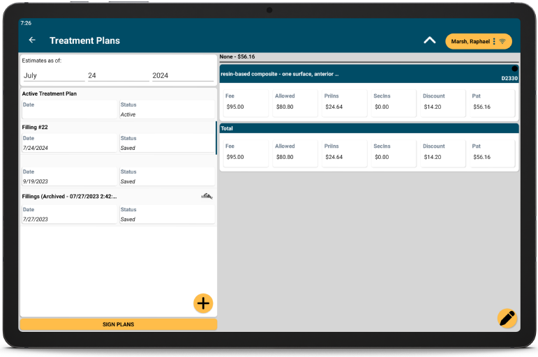

ODTouch: Treatment Plans
Create, review, and have patients sign Treatment Plans from the ODTouch device.
From the ODTouch: Home Screen, tap Tx Plans.
Tap a Treatment Plan to view details. Treatments Plans in ODTouch communicate with the Treatment Plan Module in Open Dental.
Tap the caret at the top to print the selected Treatment Plan.
Create a Saved Treatment Plan
- Tap +, then tap New Saved.
- Give the Treatment Plan a Heading. Edit Notes as needed.
- Tap + to attach procedures.
- Tap Include next to procedures to include on the Saved Treatment Plan.
- Tap OK to close procedure selection and add the procedures.
- Then the caret at the top, then tap Save.
Create an Inactive Treatment Plan
- Tap +, then tap New Inactive.
- Give the Treatment Plan a Heading. Edit Notes as needed.
- Tap + to attach procedures.
- Tap Include next to procedures to include on the Inactive Treatment Plan.
- Tap OK to close procedure selection and add the procedures.
- Then the caret at the top, then tap Save.
Edit a Treatment Plan
Tap a plan, then tap the Edit icon to view options.
- Edit: Tap to edit the selected Treatment Plan.
- Save: Tap to copy the selected Treatment Plan as a Saved Treatment Plan. Only available for Active and Inactive Treatment Plans.
- Make Active:Tap to make the selected Treatment Plan active. Only available for Inactive Treatment Plans.
- Delete: Tap to delete the selected Treatment Plan.

When editing a treatment plan, individual procedures can be edited by tapping the edit icon next to the procedure code on the right.
Sign a Treatment Plan
- From the Treatment Plan Home Screen, tap Sign Plans.
- Tap a plan on the left. Plans already signed are indicated with a signature icon.
- Tap Sign.
- Sign the plan, then tap OK.
If a plan is already signed, the signature can be replaced as needed. Tap the already signed plan, then tap Sign. A warning displays explaining the plan has already been signed. Continue to replace the signature.